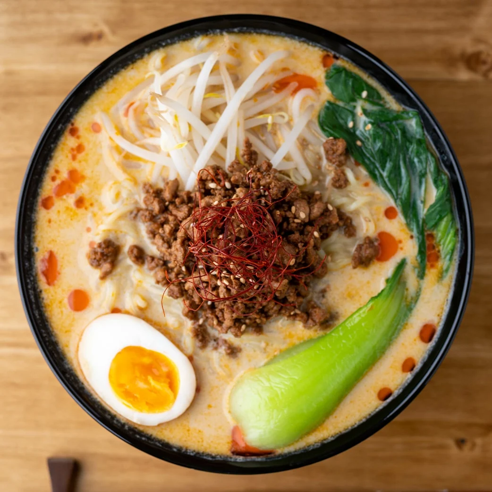

Tantanmen Ramen
「担々麺 — Spicy, creamy and full of passion.'
Tantanmen is the Japanese take on Sichuan spicy ramen. It combines a sesame paste broth, seasoned ground meat and chili. It is an explosion of flavor, balancing heat and richness.
Ingredients
- Broth with sesame paste and chili oil
- Ground pork
- Medium noodles
- Scallion, spinach and garlic
Flavor
Spicy, creamy with toasted sesame notes.
Scent
Intense and spiced.
Texture
Thick and creamy, with a velvety body.